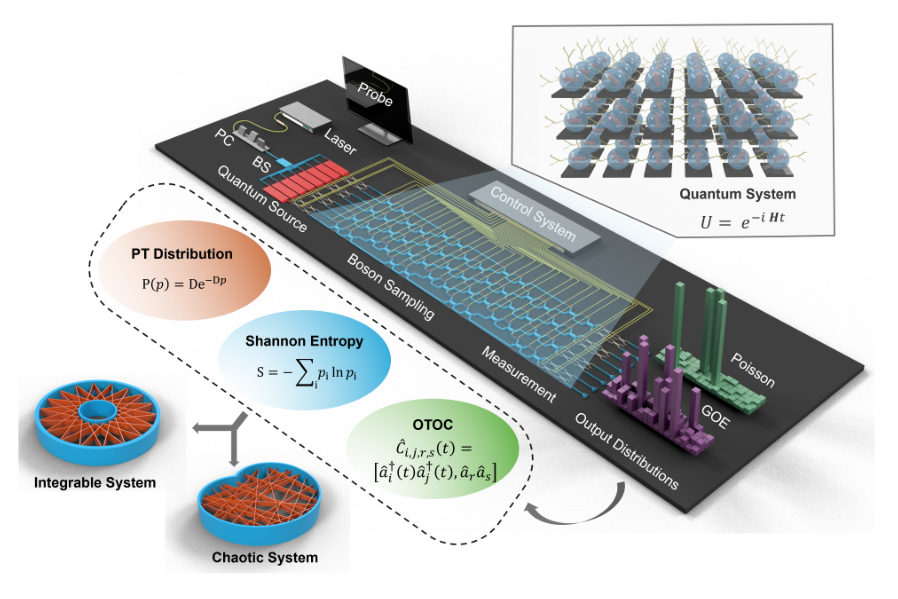

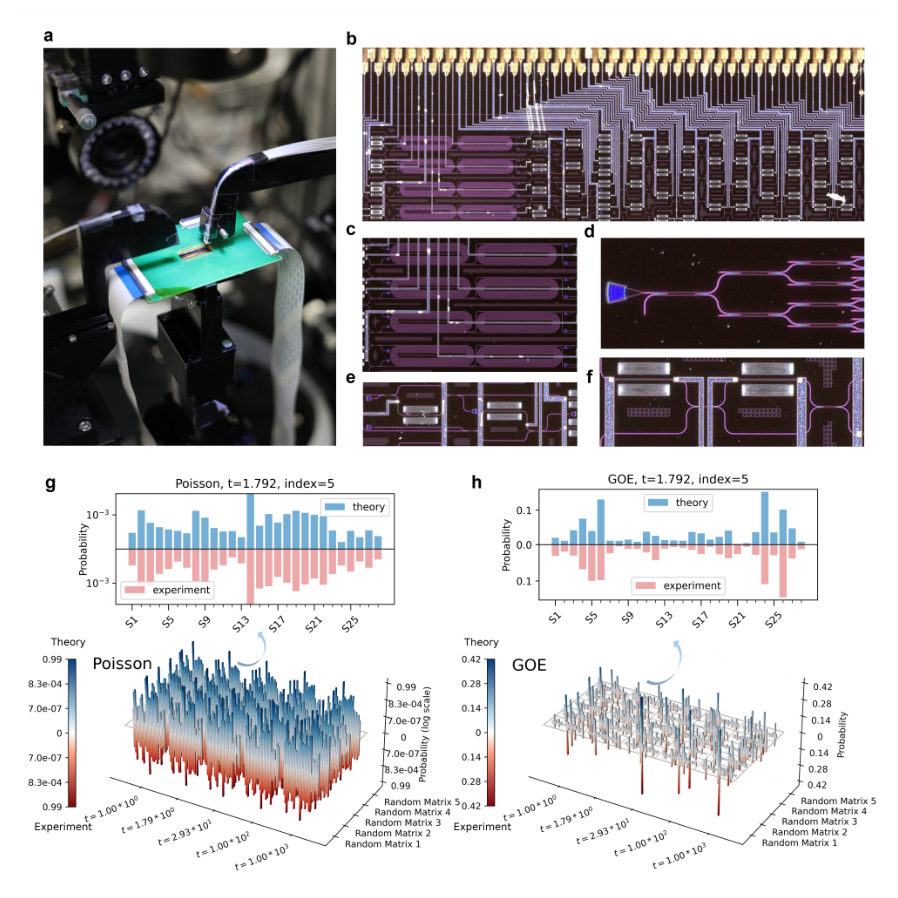
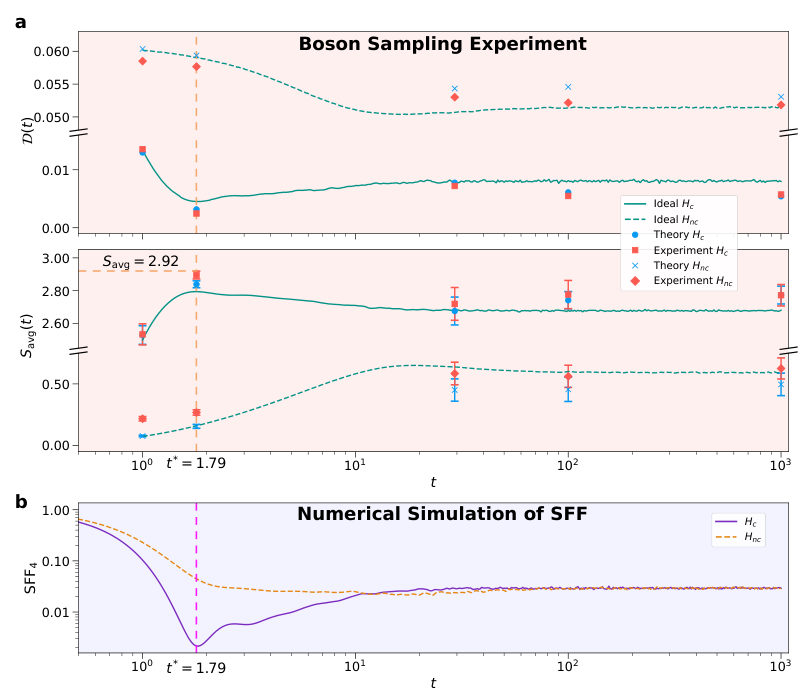
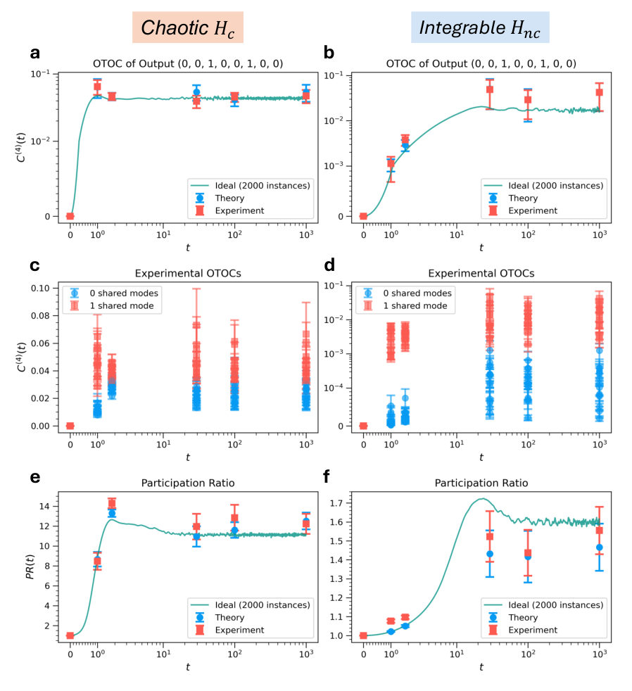
Authors: Finn Eckstein, Harald Schmid, Quinten Preiss, Simon Trebst, Felix von Oppen, Guo-Yi Zhu
Type: theory · Category: disordered systems and neural networks · PDF: https://arxiv.org/pdf/2605.24086v1
Analysis basis: full PDF text, analyzed in chunks
Topic relevance: 🔥 measurement-induced transitions 5/5 · 🔥 entanglement & information structure 4/5 · 🔥 non-equilibrium universality 4/5 · driven-dissipative phase transition 3/5 · non-equilibrium dynamics 3/5 · quantum measurements 3/5 · methods for driven-dissipative 2/5
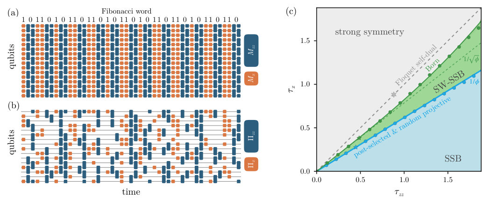
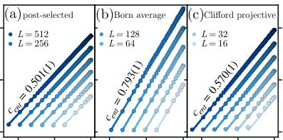
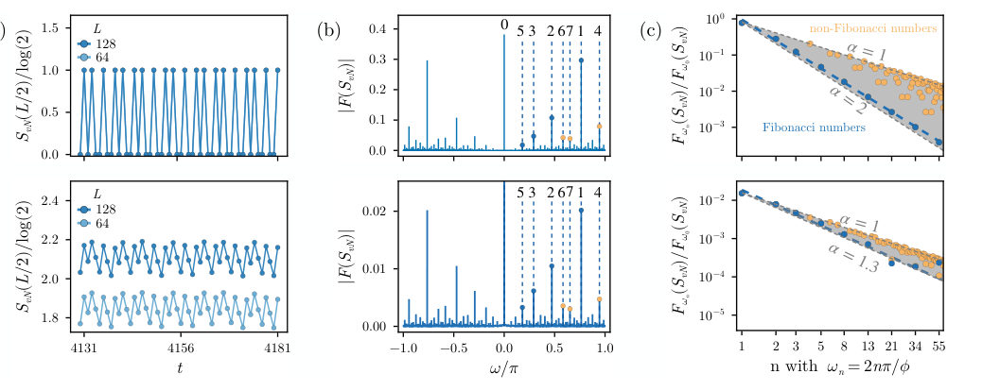
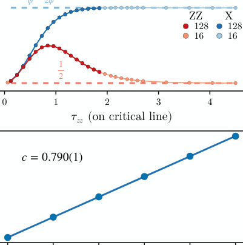
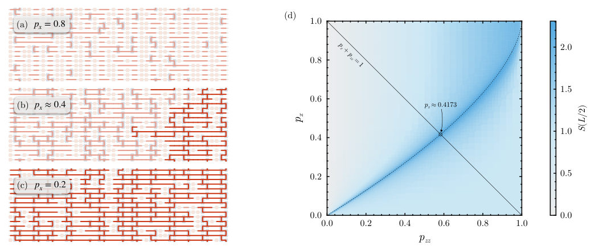
Summary. This paper explores how quantum Ising chains behave when subjected to measurements following a Fibonacci sequence. It finds that a dynamical version of Kramers-Wannier duality emerges to predict phase transitions and identifies several distinct universality classes depending on the measurement protocol used.
Why it may be interesting. This paper is highly relevant for researchers in many-body dynamics and open quantum systems as it demonstrates how non-equilibrium, non-periodic monitoring can induce emergent symmetries and new universality classes in quantum critical systems.
Main problem. Investigating the emergence of dynamical self-duality and the nature of phase transitions in quantum Ising chains subject to quasiperiodic (Fibonacci) measurement sequences.
Main result. The study identifies that dynamical self-duality organizes the phase diagram and predicts transition locations, revealing distinct universality classes for different measurement protocols, including a non-unitary CFT and 2D bond percolation.
Method. The authors use a combination of analytical techniques (Magnus expansion, transfer matrix, and statistical duality) and large-scale numerical simulations of quantum circuits to study entanglement scaling and phase boundaries.
Model / system. One-dimensional quantum Ising/Majorana chains subject to monitoring protocols (post-selection, Born-averaged, and Clifford projective) where measurements are arranged in a quasiperiodic Fibonacci sequence.
Key observables. von Neumann entanglement entropy, entanglement scaling dimension (c_ent), coherent information, and Fourier spectrum of entanglement fluctuations.
Important parameters / regimes. Measurement strengths (tau_x, tau_zz), measurement probabilities (p_x, p_zz), the golden ratio (phi), and system size (L).
Assumptions / limitations. The analysis assumes the relevance of the weak-measurement limit for certain derivations and relies on the irrelevance of quasiperiodicity at the critical point (RG-sense).
Figures summary. Figures illustrate the mapping of Clifford protocols to bond percolation, the phase diagrams for different measurement strengths, the stability of the critical exponent (nu), and the scaling of entanglement entropy and Fourier amplitudes.
Paper structure. The paper introduces the problem of quasiperiodic monitoring, defines the three measurement protocols, provides analytical derivations for the effective Hamiltonians and critical lines, presents numerical results for entanglement scaling and universality classes, and concludes with a discussion on the stability of the critical behavior.
For the quantum phase transition in the transverse-field Ising chain, Kramers-Wannier duality not only protects its critical properties but also pinpoints the location of the phase transition. Its role in out-of-equilibrium, monitored dynamics, however, remains largely unexplored beyond time-periodic Floquet protocols where self-duality turns into a statistical average symmetry. Here we explore the emergence of dynamical self-duality in the absence of time-translation symmetry by investigating the monitored dynamics of one-dimensional Ising/Majorana chains where measurements are arranged in a quasiperiodic Fibonacci sequence. We find that the dynamical extension of this non-invertible symmetry to an out-of-equilibrium setting allows one to organize the dynamical phase diagram of entangled phases, both predicting the transition locations and protecting universal critical behavior. Analytically and numerically, we identify two distinct critical lines, both related to the golden ratio, for Born-rule weak measurements and for random Clifford projective measurements. The latter coincides with the transition of a pure imaginary-time evolution, which can be viewed as a post-selected trajectory. The universality classes of the long-time critical steady states at Fibonacci times are determined, while the transient dynamics between Fibonacci times is deformed by measurements, realizing dynamical measurement-altered quantum criticality in real time.
Authors: Bihui Zhu
Type: theory · Category: quantum information and computing · PDF: https://arxiv.org/pdf/2605.25845v1
Analysis basis: full PDF text, analyzed in chunks
Topic relevance: 🔥 measurement-induced transitions 5/5 · 🔥 entanglement & information structure 4/5 · driven-dissipative phase transition 3/5 · non-equilibrium dynamics 3/5 · non-equilibrium universality 3/5 · methods for driven-dissipative 2/5 · quantum measurements 2/5
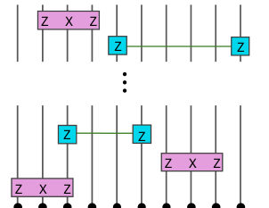
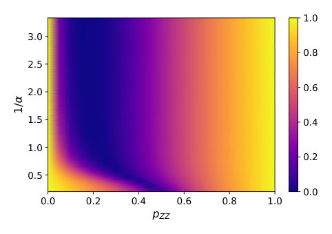
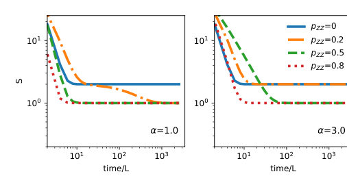
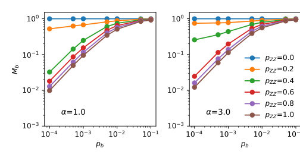
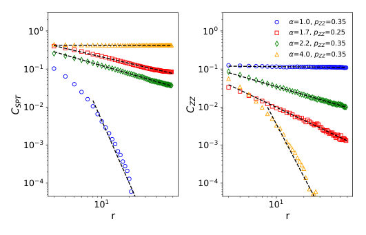
Summary. The paper explores how the range of measurements in a 1D quantum circuit influences steady-state phases like SPT and SSB. It finds that long-range measurements can destroy topological order and induce a regime with entanglement scaling that exceeds the area law. This provides new insights into how non-local monitoring can be used to control many-body quantum states.
Why it may be interesting. This work is highly relevant for researchers in open quantum systems and many-body dynamics as it demonstrates how non-unitary, non-local measurements can engineer exotic phases and entanglement scaling beyond the area law without any unitary evolution.
Main problem. Investigating how long-range connectivity and nonlocality affect the steady-state phase structure, entanglement scaling, and competition between topological and symmetry-breaking orders in measurement-only quantum circuits.
Main result. The study uncovers a rich phase diagram where SPT order persists for short-range measurements but is destabilized by long-range interactions, and identifies an intermediate regime with power-law correlations and entanglement that exceeds the area law.
Method. Numerical simulations using the stabilizer formalism and Gottesman-Knill theorem to evolve Clifford circuits, including finite-size scaling and edge-probe protocols.
Model / system. A 1D measurement-only quantum circuit consisting of competing two-qubit Ising-type measurements and three-qubit cluster measurements with a power-law distribution for the measurement range.
Key observables. SSB order parameter (O_SSB), SPT order parameter (O_SPT), string correlations, spin-spin correlations, half-chain entanglement entropy, and generalized topological entanglement entropy.
Important parameters / regimes. Measurement probability (p_ZZ), measurement range parameter (alpha), and system size (L).
Assumptions / limitations. The dynamics are restricted to the stabilizer formalism (Clifford operations), and the system is studied in the 1D limit.
Figures summary. Figure 1 shows the circuit architecture; Figure 2 presents the steady-state phase diagram; Figures 9 and 10 show the finite-size scaling of SPT and SSB order parameters.
Paper structure. The paper introduces the long-range measurement model, presents the steady-state phase diagram, analyzes the stability of SPT and SSB phases, explores entanglement scaling and correlation decay, and concludes with discussions on universality and higher-dimensional extensions.
Measurements can drive quantum many-body systems into nontrivial steady states and induce interesting dynamical phase transitions, rendering measurement-only quantum circuits a useful platform for exploring quantum many-body phases beyond those of equilibrium Hamiltonian systems. Here we study a class of long-range measurement-only quantum circuits with competing two-qubit and three-qubit measurements. We demonstrate that these circuits exhibit rich steady-state structure and uncover a strong influence of the measurement range on the resulting phases. In particular, states with symmetry-protected topological (SPT) order can emerge with sufficiently short-range measurements beyond the nearest-neighbor limit. These states feature robust topological edge modes, which can also be detected from circuit dynamics. With longer-range measurements, an extended parameter regime emerges in which conventional order parameters are suppressed while spatial correlations remain nontrivial. Moreover, we show that in this circuit model sufficiently long-range measurements can produce significant entanglement with scaling beyond an area law despite the absence of any unitary evolution.
Authors: Kang Shen, Xiangming Hu, Fei Wang
Type: theory · Category: statistical mechanics · PDF: https://arxiv.org/pdf/2605.25667v1
Analysis basis: full PDF text, analyzed in chunks
Topic relevance: 🔥 driven-dissipative phase transition 5/5 · 🔥 non-equilibrium dynamics 4/5 · Tavis-Cummings & cavity-many-emitter 3/5 · correlated / nonlocal dissipation 3/5 · Dicke superradiance 2/5 · methods for driven-dissipative 2/5 · non-equilibrium universality 2/5
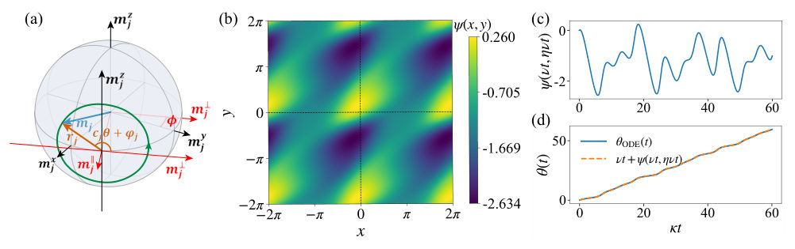
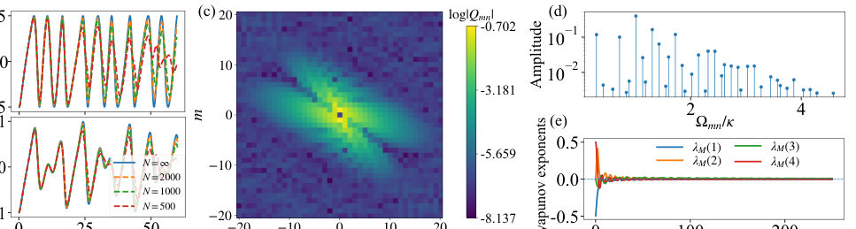
Summary. This paper shows that multilevel interference in a driven-dissipative system can spontaneously break time-translation symmetry to produce quasiperiodic motion. By using a four-level model, the authors demonstrate that an irrational ratio between transition branches leads to a time quasicrystal without needing external quasiperiodic driving. The dynamics are shown to be nonchaotic and characterized by a dense frequency spectrum.
Why it may be interesting. It provides a novel mechanism for generating complex temporal order (quasiperiodicity) through internal interference rather than external modulation, which is highly relevant for controlling non-equilibrium many-body dynamics and open quantum systems.
Main problem. Investigating whether dissipative time-crystalline order can extend beyond periodic oscillations to achieve intrinsic quasiperiodic temporal order without external quasiperiodic driving.
Main result. The authors demonstrate that multilevel interference in a driven-dissipative ensemble can generate dissipative time quasicrystals, characterized by an irrational flow on a 2D torus and a dense frequency spectrum.
Method. The study employs mean-field theory in the thermodynamic limit, mapping the many-body dynamics to a scalar phase equation and using Fourier analysis and elliptic integrals to derive the frequency spectrum.
Model / system. A collectively driven-dissipative four-level ensemble of N identical atoms with two degenerate excited and two degenerate ground states, governed by a master equation with multiple transition branches.
Key observables. Collective Bloch vectors, order parameters (m_z1 and m_z1 + m_z2), scalar phase angle theta(t), and maximal Lyapunov exponents.
Important parameters / regimes. Coherent driving strength (omega), collective dissipation rate (kappa), and the irrational relative weight of the second transition branch (eta).
Assumptions / limitations. Thermodynamic limit (N to infinity), neglect of 1/N quantum fluctuations, and the assumption of a Diophantine condition for the irrationality of eta.
Figures summary. Figure 1 shows the trajectory of the Bloch vector, torus-periodic functions, and quasiperiodic signals; Figure 2 compares mean-field vs. finite-N dynamics, shows 2D Fourier amplitudes, and displays the decay of Lyapunov exponents.
Paper structure. The paper introduces the concept of time quasicrystals, defines the four-level driven-dissipative model, derives the mean-field reduction to a phase equation, analyzes the resulting quasiperiodic dynamics and frequency spectrum, and concludes with the stability and generalization of the mechanism.
Boundary time crystals exhibit spontaneous breaking of continuous time-translation symmetry through persistent periodic oscillations in driven-dissipative many-body systems. Here, we show that multilevel interference provides a natural route beyond periodic order, enabling dissipative time quasicrystals without externally imposed quasiperiodic driving. We consider a collectively driven-dissipative four-level ensemble with two degenerate excited states and two degenerate ground states. In the thermodynamic limit, the exact mean-field dynamics reduces to an irrational flow on a two-dimensional torus, yielding quasiperiodic order parameters with discrete spectra generated by two incommensurate fundamental frequencies. Vanishing maximal Lyapunov exponents demonstrate that the nonlinear self-consistent dynamics remains nonchaotic. Our results establish a minimal interference-induced mechanism for time-quasiperiodic order and open a route toward higher-dimensional quasiperiodic dynamics in multilevel systems.
Authors: Wenxiang Ying, Abraham Nitzan
Type: theory · Category: other · PDF: https://arxiv.org/pdf/2605.24227v1
Analysis basis: full PDF text, analyzed in chunks
Topic relevance: 🔥 Tavis-Cummings & cavity-many-emitter 5/5 · Dicke superradiance 3/5 · correlated cavity matter 3/5 · Keldysh / 2PI / non-Gaussian methods 2/5 · driven-dissipative phase transition 2/5 · methods for driven-dissipative 2/5 · non-equilibrium dynamics 2/5
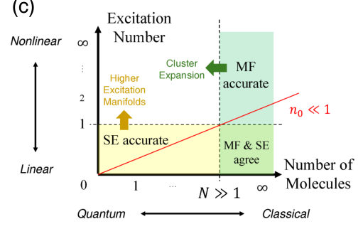
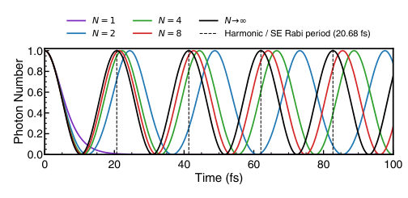
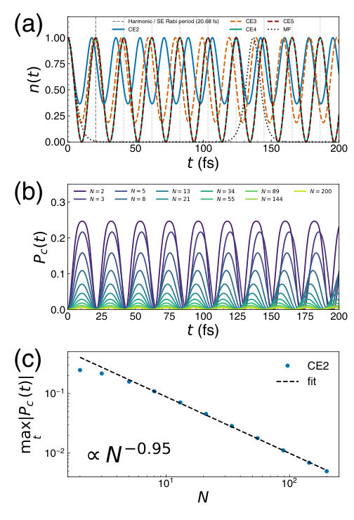
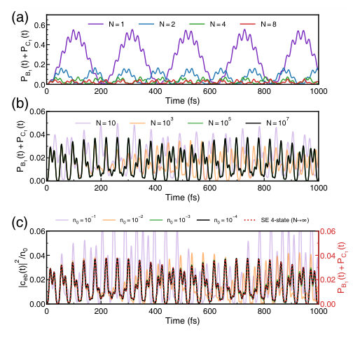
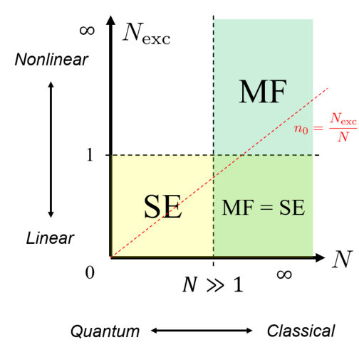
Summary. This paper identifies that the validity of common approximations in collective light-matter dynamics depends on both the number of molecules and the excitation density. It demonstrates that while the large-N limit can be described by mean-field theory, high excitation densities introduce nonlinearities described by a Duffing equation. The work provides a clear map to guide researchers in selecting appropriate theoretical models for molecular polaritons.
Why it may be interesting. It provides a fundamental diagnostic framework for choosing between semiclassical and quantum-mechanical descriptions in cavity QED and polaritonic systems, specifically clarifying how excitation density drives the transition to nonlinear dynamics.
Main problem. The lack of clear delineation regarding the parameter regimes where mean-field (MF) and single-excitation (SE) approximations are valid for describing collective light-matter dynamics.
Main result. The authors establish a two-parameter regime map (based on molecule number N and excitation density n0) that identifies when MF and SE descriptions agree, diverge, or exhibit nonlinear dynamics.
Method. Theoretical analysis using the Tavis-Cummings and Holstein-Tavis-Cummings models, supplemented by cluster expansion to restore finite-N correlations and the use of the Duffing equation to describe nonlinearities.
Model / system. A collection of N identical two-level molecules coupled to a single cavity photon mode, including local harmonic vibrations (Holstein-Tavis-Cummings model).
Key observables. Photon number dynamics, molecular population dynamics, two-molecule correlations, and effective Rabi frequency.
Important parameters / regimes. Number of molecules (N), excitation density (n0 = N_exc/N), light-matter coupling strength (g_c), and vibronic coupling strength (c_v).
Assumptions / limitations. The agreement between MF and SE is specific to the joint limit of large N and low excitation density; the study focuses on the bright-sector dynamics.
Figures summary. Figure 1 shows a schematic of the molecular ensemble and the topology of the HTC model; Figure 3 shows photon number dynamics using the cluster expansion hierarchy; Figure 5 is a TOC graphic summarizing the core concept.
Paper structure. The paper introduces the problem of approximation validity, defines the two-parameter regime map using the Tavis-Cummings model, extends the analysis to include vibronic interactions via the HTC model, and concludes with the implications for various spectroscopic and dynamical applications.
Theoretical descriptions of collective light--matter dynamics often rely on the mean-field (MF) or single-excitation (SE) approximations, yet the parameter regimes where they apply are rarely clearly delineated. Here we show that representative limiting regimes are characterized by two independent parameters: the number of molecules $N$ and the excitation number $N_{\rm exc}$. In the Tavis--Cummings model, when $N\gg 1$ and the excitation density $N_{\rm exc} / N \to 0$, MF and SE descriptions agree and yield linear collective dynamics, showing harmonic Rabi oscillations. At finite excitation density ($N_{\rm exc} / N \sim \mathcal{O}(1)$), the large-\(N\) limit remains accurately described by MF dynamics but becomes nonlinear in $N_{\rm exc} / N$, manifested by a Duffing equation for the cavity amplitude with anharmonic Rabi frequency. We further show that cluster expansion systematically restores finite-$N$ correlations beyond MF. When local vibronic interactions are included, the same linear collective limit is reached by both approximations, with SE reaching it through polaron decoupling and MF through linearization. This two-parameter regime map clarifies the limits in which different theoretical descriptions provide controlled descriptions of collective light--matter dynamics.
Authors: Benjamin Tirado, Joana Fraxanet, Adrián Juan-Delgado, Javier Aizpurua, Ruben Esteban
Type: both · Category: quantum information and computing · PDF: https://arxiv.org/pdf/2605.25830v1
Analysis basis: full PDF text, analyzed in chunks
Topic relevance: 🔥 QC/QI experiment 5/5 · 🔥 correlated / nonlocal dissipation 4/5 · Dicke superradiance 3/5 · methods for driven-dissipative 3/5 · non-equilibrium dynamics 2/5 · quantum measurements 2/5
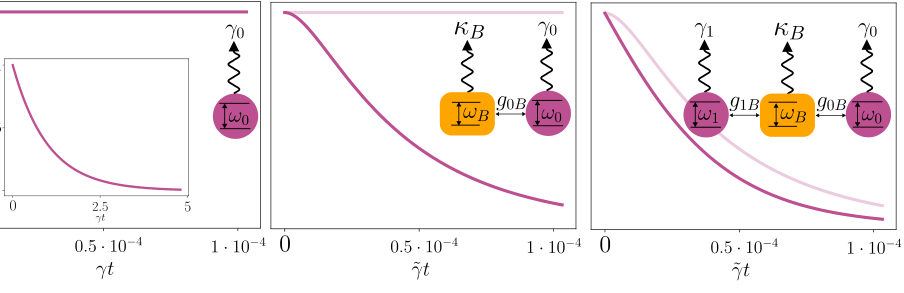
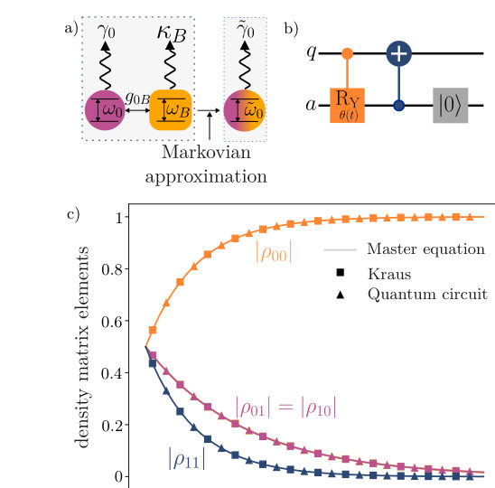
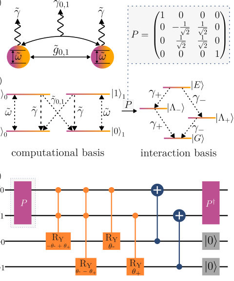
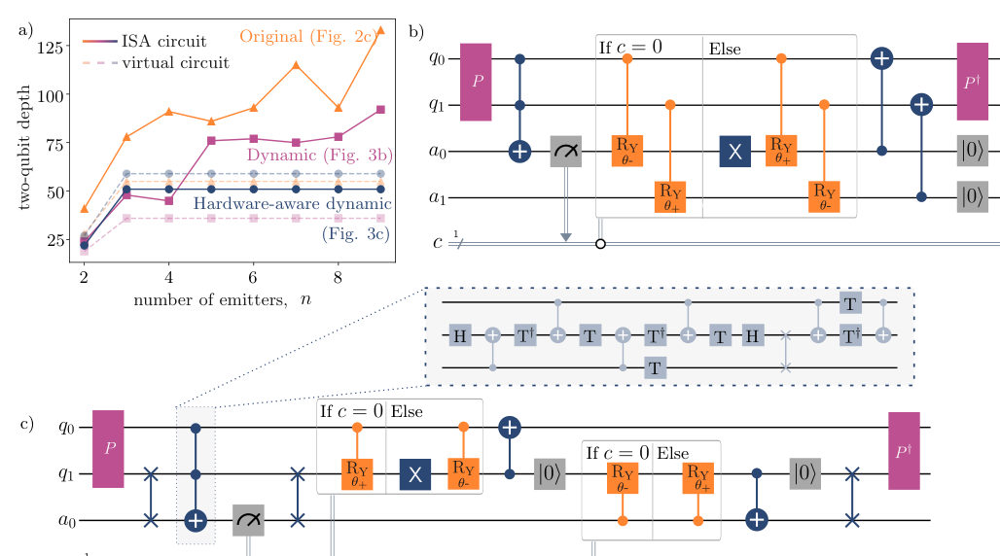
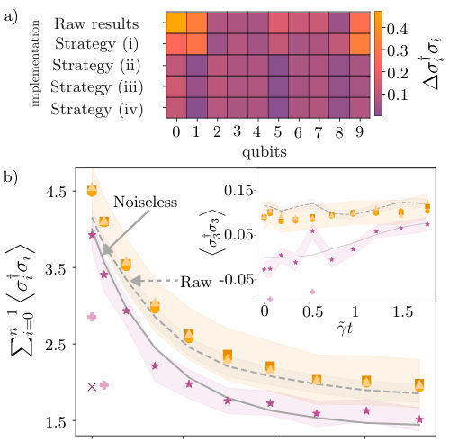
Summary. The paper demonstrates utility-scale quantum simulations of collective dissipation in large interacting qubit chains using IBM's System Two processor. By combining dynamic circuits, hardware-aware transpilation, and advanced error mitigation like biased CDR, the authors successfully model complex dissipative dynamics in systems of up to 86 emitters. This approach provides a scalable route for studying many-body open quantum systems on near-term quantum hardware.
Why it may be interesting. This work is highly relevant as it provides a practical, scalable blueprint for simulating many-body open quantum systems (like superradiance) on NISQ hardware, bridging the gap between theoretical Lindblad dynamics and large-scale experimental execution.
Main problem. Simulating the complex dissipative dynamics of large-scale interacting qubit chains on near-term quantum hardware, specifically addressing the challenges of collective decay and high circuit depth.
Main result. The authors successfully executed utility-scale experiments on the IBM System Two processor using up to 129 qubits, demonstrating that hardware-aware dynamic circuits and biased Clifford Data Regression (CDR) can accurately reproduce collective dissipative phenomena.
Method. The approach uses Trotterized evolution with ancilla-assisted dissipative channels, optimized via mid-circuit measurements, conditional gates, and hardware-aware transpilation. Error mitigation is achieved through dynamical decoupling and biased CDR, while classical validation is performed using a hybrid Monte Carlo-TEBD tensor-network method.
Model / system. A one-dimensional chain of interacting two-level quantum emitters coupled to a common Markovian bath, described by a Lindblad master equation featuring single-qupi decay and collective (cross-qubit) dissipation.
Key observables. Excited-state populations, density matrix elements (rho_00, rho_11, rho_01), and coherences.
Important parameters / regimes. Scales up to 86 emitters and 129 total qubits; largest circuits contain ~8,000 two-qubit gates; effective parameters include frequency (1.2045 eV), coupling (4.5 meV), and decay rates (9 meV).
Assumptions / limitations. The system is treated within the Markovian approximation and the weak-coupling limit, neglecting long-range interactions beyond nearest-neighbor coupling.
Figures summary. Figure 1 shows system-bath coupling and circuit architecture; Figure 2 demonstrates single-qubit decay validation; Figure 3 illustrates the interaction basis and two-qubit dynamics; Figure 4 compares circuit depth scaling for different transpilation strategies; Figure 5 evaluates error mitigation performance (ZNE and CDR); Figure 11 characterizes the IBM Heron r2 QPU metrics.
Paper structure. The paper begins by defining the problem of simulating open quantum systems, moves to the construction of the Trotterized circuit and basis transformation for collective decay, details the hardware-aware optimizations and error mitigation strategies, presents large-scale experimental results on IBM hardware, and concludes with classical validation using a hybrid tensor-network approach.
Open quantum systems are central to quantum optics, condensed matter, and chemistry, yet their simulation remains challenging for both classical and near-term quantum hardware. In this work we implement and execute utility-scale quantum circuits that accurately reproduce the dissipative dynamics of interacting qubits. We consider a one-dimensional chain of many qubits weakly coupled to a common Markovian bath. The Markovian time evolution of the system is implemented through Trotterized evolution with the introduction of ancilla-assisted dissipative channels, including single-qubit and two-qubit dissipators to capture collective decay. Mid-circuit measurements, conditional gates, and hardware-aware transpilation significantly reduce circuit depth. We further implement a biased Clifford data regression (biased CDR), an error mitigation strategy that outperforms the uniform Cliffordization baseline and a variety of zero-noise extrapolation protocols. We execute large-scale quantum experiments of the dynamics of chains comprising up to 86 emitters on the IBM System Two \texttt{ibm_basquecountry}. In order to do so, we use 129 total qubits (including ancillas), with the largest circuits contain about 8000 two-qubit gates. To validate these experiments we develop a classical Monte Carlo-Time-Evolving Block-Decimation (MC-TEBD) tensor-network method that incorporates reset operations through stochastic pure-state trajectories, obtaining very good agreement. The approach presented here opens a practical route for utility-scale quantum simulation of dissipative dynamics, enabled by dynamic circuits, targeted error mitigation, and tensor-network validation, and enables to tackle complex dynamics of systems such as quantum emitters in dissipative optical cavities.
Authors: Drishti Baruah, Georgios Styliaris, J. Ignacio Cirac, Rahul Trivedi
Type: theory · Category: numerical methods · PDF: https://arxiv.org/pdf/2605.25089v1
Analysis basis: full PDF text, analyzed in chunks
Topic relevance: 🔥 methods for driven-dissipative 5/5 · entanglement & information structure 3/5 · non-equilibrium dynamics 3/5 · analog quantum simulation 2/5 · driven-dissipative phase transition 2/5
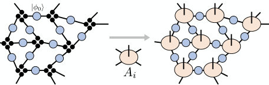
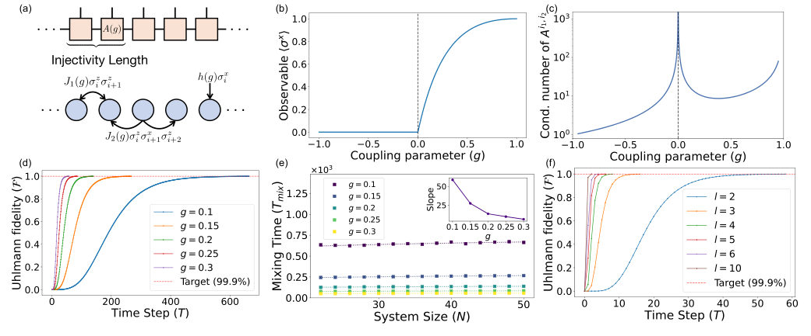
Summary. This paper presents a new class of dissipative protocols for the efficient preparation of injective tensor network states like MPS and PEPS. It achieves logarithmic scaling in system size, offering significant speedups over existing methods. The approach is particularly powerful because it is inherently robust to noise and initial state errors.
Why it may be interesting. This is highly relevant for researchers in open quantum systems and many-body dynamics as it provides a scalable, robust framework for preparing complex many-body states using engineered dissipation rather than fragile unitary evolution.
Main problem. Efficiently preparing injective tensor network states, such as MPS and PEPS, on quantum devices using dissipative protocols that are robust to noise and initialization errors.
Main result. The authors construct continuous-time and discrete-time dissipative processes that prepare injective tensor networks in logarithmic time, providing an exponential speedup over previous dissipative schemes for 1D MPS and a polynomial/exponential speedup for higher-dimensional PEPS.
Method. The method uses engineered Lindbladian dynamics and quantum channels composed of local single-site and two-site operators designed to project shared edge states onto a target state.
Model / system. The study focuses on injective tensor network states (MPS and PEPS) defined on undirected graphs with bounded degree, utilizing a parent Hamiltonian approach where the target state is the unique ground state.
Key observables. Uhlmann fidelity, local energy expectation values, and the spectral gap of the parent Hamiltonian.
Important parameters / regimes. The injectivity/isometry parameter (delta), the graph maximum degree (d0), the dissipation strength (Gamma), and the system size (N).
Assumptions / limitations. The tensors must be injective, and for guaranteed rapid mixing in PEPS, they must satisfy a 'highly injective' or near-isometric condition.
Figures summary. Figure 1 illustrates a PEPS on an arbitrary graph; Figure 2 shows a specific MPS model, its phase transition, and the vanishing of the minimum singular value at the non-injective point.
Paper structure. The paper introduces the problem of state preparation, constructs continuous and discrete dissipative protocols, proves the uniqueness of the steady state, establishes rapid-mixing properties via energy decay arguments, and validates results with numerical simulations.
The preparation of tensor network states is a fundamental prerequisite for a wide range of quantum simulation tasks. While many unitary protocols for preparing these states have been investigated, dissipative state preparation provides a powerful alternative since it can be robust to noise and initialization errors. In this paper, we construct both continuous-time and discrete-time geometrically local dissipative processes whose unique steady state is a given injective tensor network state. Our method prepares all injective matrix product states on $N$ sites to an error $\varepsilon$ in $O(\log (N/\varepsilon))$ time, yielding an exponential improvement over previously known dissipative preparation schemes. For two and higher-dimensional tensor network states, we prove that when the tensors of the state are \emph{highly injective}, the constructed dissipative processes are rapid-mixing i.e., they prepare a state $\varepsilon$-close to the $N$-site target state in $O( \log (N/\varepsilon))$ time. For these states, our approach provides a polynomial speedup over known unitary methods for states defined on lattices and an exponential speedup for states on general bounded-degree graphs. We corroborate our theoretical results with numerical studies that indicate that the dissipative protocol can rapidly prepares states outside the high-injectivity assumption.
Authors: Jia-Wen Tao, Hui-Ke Jin
Type: theory · Category: statistical mechanics · PDF: https://arxiv.org/pdf/2605.25102v1
Analysis basis: full PDF text, analyzed in chunks
Topic relevance: 🔥 entanglement & information structure 5/5 · methods for driven-dissipative 2/5 · non-equilibrium dynamics 2/5 · non-equilibrium universality 2/5
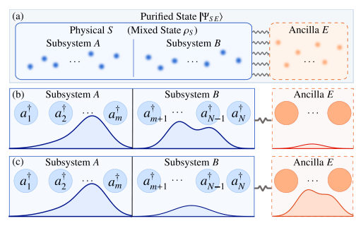
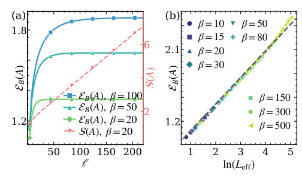
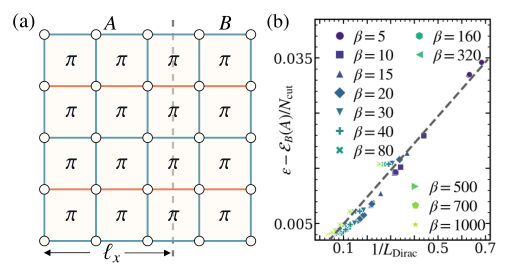
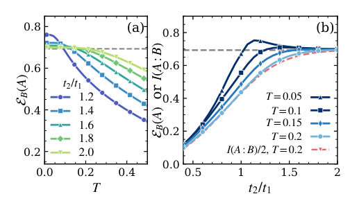
Summary. The paper introduces a new diagnostic called Entanglement Projected Entropy (EPE) designed to extract quantum correlations from mixed states. By filtering out the volume-law thermal background, EPE successfully recovers universal entanglement scaling in both 1D and 2D fermionic models. This allows for the identification of quantum signatures that are otherwise hidden by thermal fluctuations.
Why it may be interesting. This is highly relevant for many-body dynamics and open quantum systems as it provides a new tool to distinguish true quantum entanglement from thermal noise in mixed-state many-body systems.
Main problem. Identifying spatial quantum correlations in mixed states is difficult because thermal/classical contributions to subsystem entropy scale with volume, obscuring boundary-sensitive entanglement signatures.
Main result. The authors introduce Entanglement Projected Entropy (EPE), a diagnostic that filters out extensive thermal backgrounds to recover universal entanglement scaling, such as the c/3 coefficient in 1D and universal scaling collapse in 2D.
Method. The method involves embedding mixed fermionic Gaussian states into a globally pure state via an ancilla environment and using a directional projection weight to isolate entanglement channels residing in the physical complement.
Model / system. The study focuses on mixed fermionic Gaussian states, specifically a 1D critical free-fermion chain and a 2D half-filled pi-flux model on a square lattice.
Key observables. Entanglement Projected Entropy (EPE), von Neumann entropy, Mutual Information, and the directional weight (w_q).
Important parameters / regimes. Inverse temperature (beta), central charge (c), UV cutoff (a), and the effective Dirac infrared length (L_Dirac).
Assumptions / limitations. The derivations and EPE formulation are specifically tailored to and limited to Gaussian fermionic states.
Figures summary. Figure 1(a) provides a schematic of the purification process where a mixed state is embedded into a larger pure state with an ancilla environment.
Paper structure. The paper introduces the EPE diagnostic, develops its mathematical framework for Gaussian states, provides a closed-form expression using the covariance matrix, and then applies it to 1D and 2D models to demonstrate its ability to recover universal scaling and topological signatures.
Identifying spatial quantum correlations in mixed states is challenging because thermal mixed-state contributions obscure the entanglement encoded in subsystem entropy. Here, we introduce the entanglement projected entropy, a diagnostic for extracting boundary-sensitive quantum correlations from mixed fermionic Gaussian states. By resolving subsystem entropy into Gaussian entanglement channels and projecting their purification partners onto the physical complement, we obtain a closed-form expression in terms of the physical covariance matrix. In a one-dimensional free-fermion chain, it removes the volume-law mixed-state background and recovers the zero-temperature conformal scaling with the $c/3$ coefficient. In a two-dimensional half-filled $π$-flux model, it reveals a universal finite-temperature scaling collapse governed by an effective Dirac infrared length. These results establish entanglement projected entropy as a Gaussian spatial filter for boundary-sensitive quantum correlations hidden in mixed-state entropy.
Authors: Qucheng Gao, Vikram Ravindranath, Xiao Chen
Type: theory · Category: statistical mechanics · PDF: https://arxiv.org/pdf/2605.24335v1
Analysis basis: full PDF text, analyzed in chunks
Topic relevance: 🔥 entanglement & information structure 4/5 · 🔥 non-equilibrium dynamics 4/5 · Kondo & dissipative impurity 3/5 · driven-dissipative phase transition 3/5 · measurement-induced transitions 3/5 · non-equilibrium universality 3/5 · methods for driven-dissipative 2/5 · quantum measurements 2/5
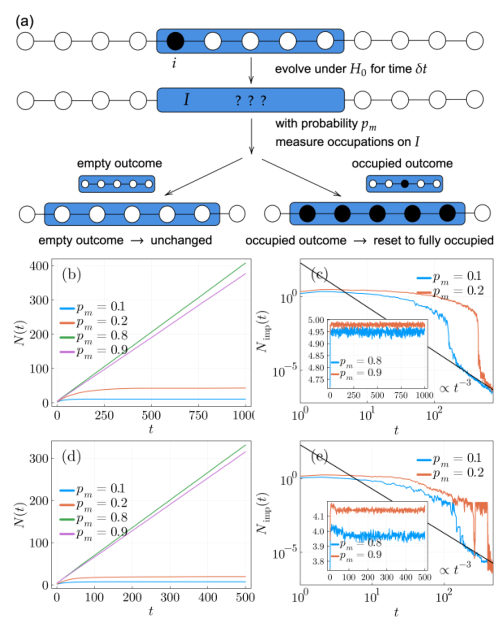
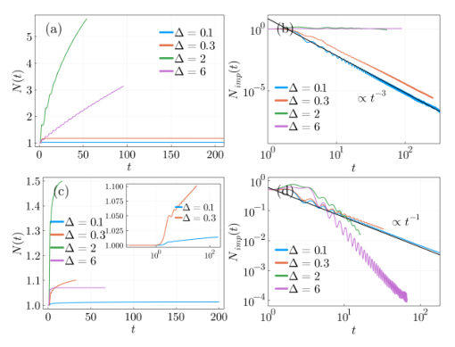
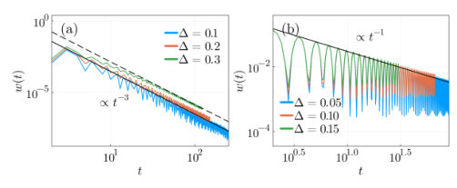
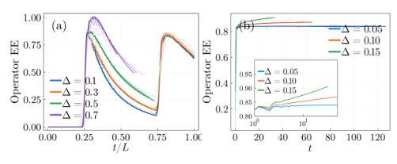
Summary. This paper demonstrates that a single local impurity can act as a branching source, driving a transition from particle saturation to sustained growth and operator scrambling in free-fermion chains. The dynamics are governed by the return probability of particles to the impurity, which varies depending on whether the impurity is in the bulk or at the boundary. The findings reveal how local interactions can generate complex many-body behavior in otherwise simple, integrable systems.
Why it may be interesting. It provides fundamental insights into how local perturbations can trigger many-body complexity and non-equilibrium phase transitions in simple systems, which is highly relevant to understanding non-equilibrium dynamics and open quantum systems.
Main problem. Investigating whether a single local impurity can induce nontrivial dynamics, particle growth, and information scrambling in an otherwise clean, simple free-fermion system.
Main result. The study identifies a transition from a saturating regime to a sustained growth and scrambling regime, driven by the interplay between local impurity branching and the return probability of the bulk.
Method. The authors use a 'branching picture' analytical framework, large-scale MPS simulations using the ITensor library, and Laplace transform analysis of the single-particle propagator.
Model / system. One-dimensional clean free-fermion systems, including monitored models with measurement-and-feedback, unitary interacting particle models, and Heisenberg operator dynamics with local impurities.
Key observables. Total particle number N(t), impurity occupation N_imp(t), particle-production current J(t), impurity-sensitive operator weight w(t), and operator entanglement entropy.
Important parameters / regimes. Monitoring probability p_m, impurity coupling strength Delta, impurity location (boundary vs. bulk), and the power-law decay exponent alpha of the return kernel.
Assumptions / limitations. The branching picture is a heuristic analogy rather than a literal description of coherent quantum dynamics; the derivation relies on the spectrum being bounded and dispersion being quadratic.
Figures summary. Schematic of the monitored model protocol; plots of total particle number and impurity occupation showing saturation vs. linear growth; and plots of operator weight decay and entropy scaling.
Paper structure. Introduction of the impurity-induced growth problem, presentation of the monitored model and branching mechanism, analysis of unitary particle and operator models, investigation of scaling laws and dimensionality, and discussion of parity-breaking and topological effects.
We study impurity-induced particle growth and scrambling in clean one-dimensional free-fermion systems. We show that a single local impurity can act as a branching source: particle or operator weight propagates coherently into the free bulk, returns to the impurity, and is locally converted into additional degrees of freedom. We develop this branching picture in three complementary settings: a monitored free-fermion model with feedback, a fully unitary interacting particle model, and Heisenberg operator dynamics with an interacting impurity. In the monitored model, we find a feedback-driven transition for both boundary and bulk impurities. In the unitary particle and operator models, a boundary impurity gives rise to an analogous transition from saturation to sustained growth and scrambling. These results reveal how a single impurity can generate complex many-body dynamics in an otherwise clean and free quantum system.
Authors: Yuancheng Zhan, Khen Cohen, Norman T. W. Koo, Kian Hwee Lim, Hui Zhang, Lingxiao Wan, Sanghoon Chae, Ai Qun Liu, Victor M Bastidas, Yaron Oz, Leong-Chuan Kwek
Type: both · Category: quantum information and computing · PDF: https://arxiv.org/pdf/2605.25398v1
Analysis basis: full PDF text, analyzed in chunks
Topic relevance: 🔥 QC/QI experiment 4/5 · 🔥 entanglement & information structure 4/5 · 🔥 quantum optics experiment 4/5 · analog quantum simulation 3/5 · non-equilibrium dynamics 3/5 · interference shaping light 2/5




Summary. This paper demonstrates that boson sampling on an integrated photonic chip can serve as a powerful diagnostic tool for quantum chaos. By measuring statistical signatures like Shannon entropy and Porter-Thomas distance, the authors successfully distinguish between integrable and chaotic quantum dynamics. This provides a scalable route for investigating complex, non-equilibrium quantum dynamics on programmable photonic platforms.
Why it may be interesting. This paper is highly relevant for researchers in quantum optics and many-body dynamics as it provides a scalable, hardware-integrated method to study information scrambling, operator growth, and the transition between integrability and chaos using bosonic interference.
Main problem. The lack of a clear connection between programmable integrated photonic dynamics and established diagnostics for probing quantum chaos, specifically the need for a scalable method to distinguish between chaotic and integrable dynamics.
Main result. The researchers established Fock-state boson sampling as a practical probe of quantum chaos, demonstrating that three complementary probes (Porter-Thomas distance, Shannon entropy, and OTOC-equivalent observables) can successfully distinguish between integrable and chaotic dynamics on a silicon photonic chip.
Method. The work maps the temporal evolution of a quantum Hamiltonian onto the unitary transformations of a programmable photonic interferometer and uses statistical analysis of multiphoton interference patterns to extract chaos signatures.
Model / system. An 8-mode programmable silicon quantum photonic chip using spontaneous four-wave mixing for photon-pair generation and a reconfigurable network of Mach-Zehnder interferometers to implement unitary evolution $U(t) = e^{-iHt}$.
Key observables. Distance to Porter-Thomas statistics, Shannon entropy, OTOC-equivalent observables, Spectral Form Factor (SFF), and Participation Ratio (PR).
Important parameters / regimes. The parameter $\Lambda$ (or $\lambda$) which tunes the crossover between integrable (Poissonian) and chaotic (GOE) regimes, and the number of photons $N$ and modes $M$.
Assumptions / limitations. The use of non-number-resolving detectors requires post-selection of collision-free events, and the validity of the Porter-Thomas approximation assumes the ratio of lost configurations to total configurations is small.
Figures summary. Figure 1 shows the experimental workflow and mapping of dynamics; Figure 2 illustrates the photonic chip architecture and probability distributions; Figure 3 presents the temporal evolution of $D(t)$ and Shannon entropy alongside SFF simulations; Figure 4 shows the temporal evolution of specific output probabilities and the scaling of the participation ratio.
Paper structure. The paper begins by establishing the theoretical framework for mapping Hamiltonian dynamics to photon interference, describes the design and fabrication of the silicon photonic chip, introduces the three statistical probes for chaos, presents experimental validation of these probes, and concludes with scaling analysis and extensions to spin systems.
Quantum technologies have become a powerful paradigm for quantum information and simulation, while quantum chaos plays a key role in understanding complex quantum dynamics. Integrated photonics offers unique advantages for quantum applications, including high-speed operation, scalability, and programmable unitary transformations. However, probing quantum chaos on integrated photonic platforms remains largely unexplored because a clear connection between programmable photonic dynamics and established chaos diagnostics is still lacking. In this work, we establish Fock-state boson sampling as a practical probe of quantum chaos by exploiting the sensitivity of multiphoton interference to the random-matrix properties of underlying single-particle unitary dynamics. More importantly, we design and fabricate a programmable silicon quantum photonic chip to experimentally implement this framework, achieving the first integrated-photonic demonstration of quantum-chaos probes based on boson sampling. Experimental results show that the three complementary probes proposed in this work, namely the distance to Porter-Thomas statistics, Shannon entropy, and Out-of-Time-Ordered-Correlator-equivalent observables, exhibit close agreement with theoretical predictions and consistently distinguish chaotic and integrable dynamics. Our work provides a scalable route for investigating complex quantum dynamics on programmable photonic platforms while leveraging the intrinsic advantages of boson sampling through multiphoton interference and complex output statistics.
Authors: Naofumi Abe, Keiichi Edamatsu
Type: both · Category: quantum information and computing · PDF: https://arxiv.org/pdf/2605.25738v1
Analysis basis: full PDF text, analyzed in chunks
Topic relevance: 🔥 QC/QI experiment 4/5 · 🔥 quantum measurements 4/5 · 🔥 quantum optics experiment 4/5 · entanglement & information structure 3/5 · interference shaping light 2/5 · spintronics-quantum-optics interface 2/5
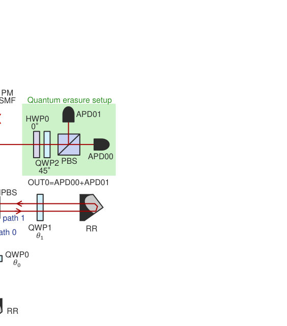
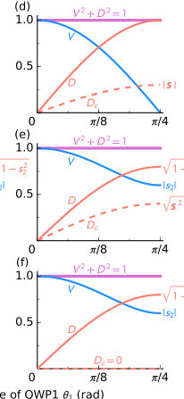
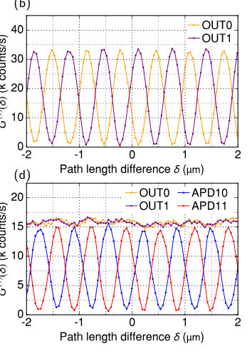
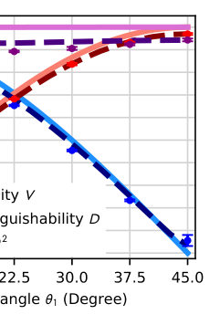
Summary. This paper addresses the inaccuracy of the wave-particle duality relation when dealing with mixed-state quantum systems. By redefining distinguishability to include information shared with the environment, the authors demonstrate that the fundamental duality equality can be restored even for unpolarized photons. The findings were experimentally verified using single photons from an NV center in diamond.
Why it may be interesting. This is highly relevant for researchers in quantum optics and open quantum systems as it provides a fundamental correction to how complementarity and information retrieval are quantified when a system is entangled with its environment.
Main problem. The conventional wave-particle duality (WPD) relation, V^2 + D^2 <= 1, fails to saturate for mixed-state which-way markers because the standard definition of distinguishability underestimates the total which-path information.
Main result. The authors introduce a generalized measure of distinguishability (D) that incorporates information shared with the environment, successfully restoring the saturated WPD equality (V^2 + D^2 = 1) for unpolarized photons.
Method. The study uses a purification-based framework to model mixed states and proposes an experimental method to quantify the new D using projective measurements on the which-way marker.
Model / system. A Michelson interferometer using single photons in a completely mixed (unpolarized) state, generated from a nitrogen-vacancy (NV) center in diamond, where photon polarization serves as the which-way marker.
Key observables. Interference fringe visibility (V), generalized distinguishability (D), conventional distinguishability (Dc), polarization coherence, and the likelihood of a which-way guess (L).
Important parameters / regimes. Unpolarized (completely mixed) polarization state, coherence length of 13.5 micrometers, and the rotation angles of waveplates used to induce which-path information.
Assumptions / limitations. The definition of D is primarily demonstrated for qubit-based systems (polarization); higher-dimensional generalizations are theoretically possible but computationally difficult.
Figures summary. Figure 1 shows the Michelson interferometer setup; Figure 3 displays interference fringes showing intrinsic coherence, the effect of which-path information, and the revival of fringes via quantum erasure.
Paper structure. The paper begins by identifying the failure of the standard WPD relation for mixed states, introduces a theoretical framework for a generalized distinguishability D using purification, describes the experimental setup with NV center photons, and concludes with experimental verification of the saturated WPD relation.
Photons in a two-path interferometer best embody wave-particle duality (WPD), which is a core concept of quantum theory. So far, the WPD relation is commonly written as $V^2+D^2 \leq 1$, where $V$ is the interference fringe visibility and $D$ is path distinguishability, i.e., the distinguishability of which path a photon passed. This inequality is saturated only when the which-way marker (WWM), which embodies which-path information (WPI) via an internal degree of freedom of photons, such as polarization, is in a pure state. For mixed-state WWM, conventionally defined distinguishability underestimates the amount of WPI and thus does not saturate the WPD relation. Here, we introduce a generalized measure of distinguishability $D$ that properly quantifies the WPI and saturates the WPD relation for all pure- and mixed-state WWM within a purification-based framework. To this end, mixed-state WWM is treated as a result of entanglement formation between the WWM and an external degree of freedom, e.g., environment, and $D$ is defined so that it incorporates the total WPI shared between the WWM and the environment. We show that $D$ thus defined is experimentally quantifiable, independently of $V$, without access to the environment. We experimentally evaluate $V$ and $D$ using true single photons generated in the completely mixed (unpolarized) state, and thus verify the saturated WPD relation.
Authors: Filippo Ferrari, Joachim Cohen, Vincenzo Savona, Fabrizio Minganti
Type: both · Category: quantum information and computing · PDF: https://arxiv.org/pdf/2605.24100v1
Analysis basis: full PDF text, analyzed in chunks
Topic relevance: 🔥 methods for driven-dissipative 4/5 · driven-dissipative phase transition 3/5 · non-equilibrium dynamics 3/5 · Keldysh / 2PI / non-Gaussian methods 2/5 · correlated / nonlocal dissipation 2/5 · entanglement & information structure 2/5 · quantum measurements 2/5
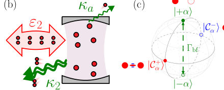
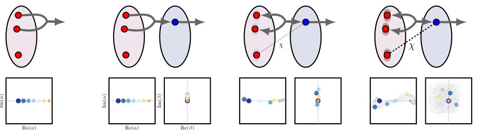
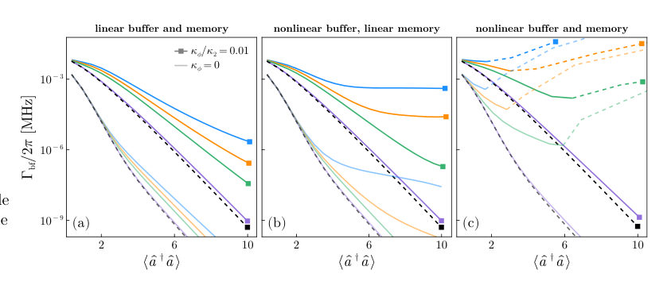
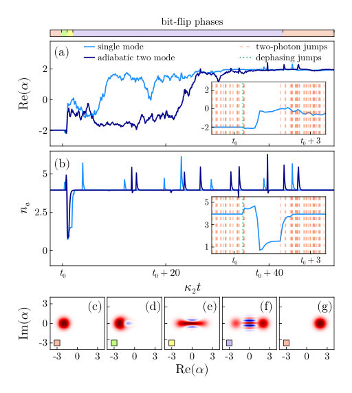
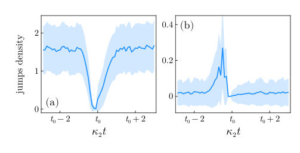
Summary. This paper explains why the error protection in cat qubits saturates at large photon numbers by showing that a single-mode description is insufficient. It demonstrates that the interplay between non-adiabatic dynamics and cross-Kerr nonlinearities triggers chaotic-like bursts during bit-flip events. The findings provide a way to quantitatively match experimental error rates using a two-mode model.
Why it may be interesting. It provides a deep connection between quantum error correction performance and the emergence of dissipative quantum chaos in open quantum systems, specifically showing how nonlinear mode-coupling destroys the protection of bosonic codes.
Main problem. The paper investigates the physical origin of the saturation of bit-flip error rates in bosonic cat qubits, which prevents the exponential suppression of errors predicted by single-mode theory.
Main result. The authors identify that the breakdown of adiabaticity and the presence of nonlinearities (specifically cross-Kerr interaction) and dephasing lead to a transition from regular to chaotic-like bit-flip dynamics, causing the observed saturation.
Method. The study combines quantum-trajectory simulations, semiclassical analysis of equations of motion, and Liouvillian spectral methods (including Spectral Statistics of Quantum Trajectories) to analyze the system.
Model / system. A two-mode dissipative system consisting of a high-coherence memory mode and a strongly dissipative buffer cavity, described by a Lindblad master equation including two-photon processes, Kerr nonlinearities, and cross-Kerr interactions.
Key observables. Bit-flip rate (Liouvillian gap), photon number, Wigner functions, quantum trajectory topology, and spectral coefficients of Liouvillian eigenstates.
Important parameters / regimes. Photon number (cat size), coupling strength (g2), dissipation rates (ka, kb), cross-Kerr interaction (chi), dephasing (k_phi), and the adiabatic/non-adiabatic regime.
Assumptions / limitations. The model assumes the primary source of error saturation is the interaction between the memory and buffer modes rather than external noise sources not included in the two-mode model.
Figures summary. Figure 1 shows the system schematic; Figure 3 explores bit-flip scaling in different regimes; Figure 6 illustrates non-adiabatic bit-flips; Figure 11 compares experimental data to single-mode and two-mode models; Figure 19 shows spectral statistics and entropy of trajectories.
Paper structure. The paper introduces the problem of bit-flip saturation, presents a two-mode model, analyzes the breakdown of the adiabatic approximation and symmetry, explores the role of nonlinearities and dephasing, investigates the emergence of dissipative chaos via spectral statistics, and validates the findings against experimental data.
Bosonic cat qubits promise hardware-efficient quantum error correction because their logical bit-flip rate is exponentially suppressed with the photon number of the cat state. However, several experiments report a saturation of this suppression at large photon numbers, thus limiting the achievable protection. Combining quantum-trajectory simulations, semiclassical analysis, and Liouvillian spectral methods, we investigate the properties of bit flips in realistic dissipative cat qubits, where a memory mode hosting quantum information interacts with a dissipative buffer cavity. We show that bit flips are dynamical processes inherently involving both the memory and buffer, and therefore cannot be captured by single-mode approximate descriptions. We identify a reflection symmetry, resulting in a phase-locking condition at the semiclassical level and for quantum trajectories, as the main requirement for regular bit-flip dynamics. Its breakdown is the origin of the saturation, and we find that it occurs when two conditions are met. First, the adiabatic approximation, where the state of the buffer instantaneously follows that of the memory, must not be valid, which typically happens at large photon numbers. Second, key parameters such as the cross-Kerr interaction and dephasing must be present, leading to irregular dynamics in which memory fluctuations are amplified by the buffer during bit flips. In this regime, we find that bit flips manifest as chaotic bursts within otherwise regular dynamics, as evidenced by both changes in the topology of quantum trajectories and in the Liouvillian spectrum and its associated eigenmodes involved in these switching events. Finally, we verify our predictions against experimental data, highlighting the detrimental role of dissipative chaotic behavior in bosonic error-correcting codes.
Authors: Caroline Nowoczyn, Ludwig Mathey, Kilian Seibold
Type: theory · Category: statistical mechanics · PDF: https://arxiv.org/pdf/2605.24122v1
Analysis basis: full PDF text, analyzed in chunks
Topic relevance: 🔥 methods for driven-dissipative 4/5 · driven-dissipative phase transition 3/5 · non-equilibrium dynamics 3/5 · quantum measurements 3/5 · non-equilibrium universality 2/5
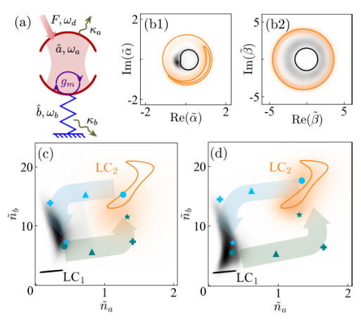
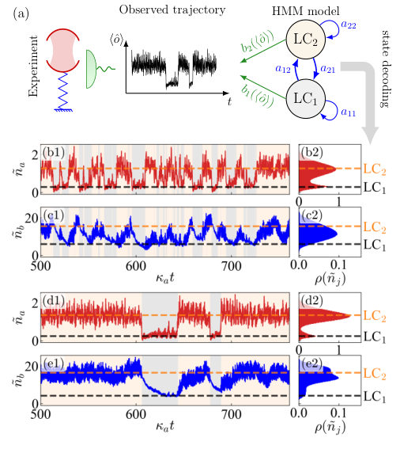
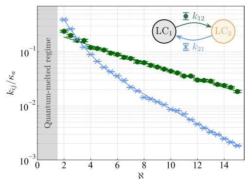
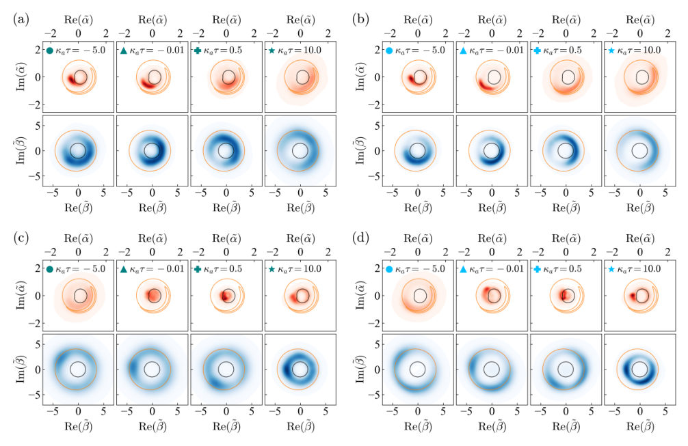
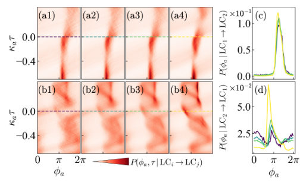
Summary. This paper investigates how quantum fluctuations drive transitions between two coexisting oscillatory states in an optomechanical system. It reveals that while one direction of escape is simple and localized, the other involves multiple competing pathways, a phenomenon termed 'multichannel quantum escape.' This discovery highlights the complex, phase-dependent geometry of metastability in driven-dissipative quantum systems.
Why it may be interesting. It provides a deep look into the non-equilibrium dynamics of open quantum systems, specifically how quantum fluctuations break the simplicity of classical escape by introducing multiple phase-dependent pathways, which is highly relevant to quantum optics and dissipative phase transitions.
Main problem. Understanding the nature of quantum-induced switching (metastability) between coexisting limit cycles in driven-dissipative systems and characterizing the geometry of the resulting escape pathways.
Main result. The study identifies a directional asymmetry in escape: the small-amplitude cycle transitions via a single radial corridor with Arrhenius scaling, while the large-amplitude cycle involves multiple competing, phase-localized 'multichannel' escape corridors.
Method. The authors use quantum-jump trajectories (Monte Carlo wave-function method) combined with Hidden Markov Models (HMM) for trajectory segmentation and Kaplan-Meier estimators for survival analysis.
Model / system. A driven optomechanical resonator described by a Lindblad master equation, featuring a single optical mode coupled via radiation pressure to a mechanical mode, exhibiting two coexisting stable limit cycles in the semiclassical limit.
Key observables. Directional switching rates (k12, k21), event-conditioned phase distributions, optical and mechanical populations, and the phase-conditioned escape hazard.
Important parameters / regimes. The scaling parameter Aleph (controlling quantum-to-classical crossover), optical detuning, coupling strength, and dissipation rates (kappa_a, kappa_b).
Assumptions / limitations. Assumes a separation of timescales between fast intra-attractor relaxation and rare switching events, and assumes the switching process can be modeled as a Markovian process.
Figures summary. Figure 1 shows the optomechanical setup and phase-space projections of the limit cycles; Figure 3 compares switching rate scaling for both directions; Figure 5 illustrates the phase-localized vs. multimodal escape distributions; Figure 9-10 detail the HMM segmentation method.
Paper structure. The paper introduces the optomechanical system and the problem of limit-cycle switching, describes the quantum-to-classical scaling and trajectory methods, presents the HMM-based analysis of switching statistics, details the discovery of multichannel escape via phase-resolved analysis, and concludes with the connection to Liouvillian spectral properties.
Driven-dissipative quantum systems can recover stable dynamical attractors in the semiclassical limit, including coexisting limit cycles. At finite fluctuation strength, this classical coexistence becomes quantum metastability: the corresponding oscillatory states undergo rare fluctuation-induced transitions. We demonstrate phase-resolved quantum escape between two such states in a driven optomechanical resonator. Unlike escape from fixed points, switching between extended attractors occurs across a periodic basin boundary and depends on the phase at which fluctuations approach it. Using quantum-jump trajectories across a controlled quantum-to-classical crossover, we reconstruct the escape geometry directly from switching events. Escape from the small-amplitude cycle proceeds through a single radial corridor and exhibits near-Arrhenius scaling, whereas escape from the large-amplitude cycle involves competing phase-localized corridors with distinct effective activation scales. The resulting curvature in the switching-rate scaling, together with event-conditioned phase distributions, identifies finite-fluctuation multichannel quantum escape between extended attractors.
Authors: Hanfeng Wang, Shuang Wu, Matthew E. Trusheim, Avetik Harutyunyan, Dirk R. Englund
Type: theory · Category: other · PDF: https://arxiv.org/pdf/2605.25152v1
Analysis basis: full PDF text, analyzed in chunks
Topic relevance: 🔥 Tavis-Cummings & cavity-many-emitter 4/5 · 🔥 quantum measurements 4/5 · 🔥 spintronics-quantum-optics interface 4/5 · methods for driven-dissipative 2/5
Summary. This paper proposes a dispersive readout technique for NV ensemble-based quantum sensors to overcome the limitations of spin saturation and power broadening. The method achieves near-unity readout fidelity and femtotesla-level sensitivity. Crucially, it shows that the readout sensitivity scales favorably with the number of spins, approaching the standard quantum limit.
Why it may be interesting. It provides a theoretical pathway to reach the Standard Quantum Limit in ensemble-based sensors and explores the nonlinear dynamics of the transition between the deeply dispersive and intermediate regimes in open quantum systems.
Main problem. Existing continuous-wave cavity QED readout for NV ensemble sensors is limited by spin saturation and power broadening, preventing them from reaching the intrinsic spin-projection-noise limit.
Main result. The authors demonstrate a dispersive cQED readout technique that achieves near-unity readout fidelity and femtotesla-level magnetic sensitivity, with a scaling of sensitivity that improves as 1/N.
Method. A comprehensive Maxwell-Bloch framework using the quantum master equation and Lindbladian formalism is developed, supplemented by time-domain simulations to capture dynamics in the intermediate detuning regime.
Model / system. A solid-state quantum sensor consisting of a diamond NV ensemble coupled to a microwave cavity mode in a cQED configuration, described by a Hamiltonian involving cavity-probe detuning and collective spin-cavity coupling.
Key observables. Cavity quadrature (Im[alpha]), signal (S), inverse readout fidelity (sigma_e), and magnetic sensitivity (eta).
Important parameters / regimes. Single-photon coupling strength (gs), collective coupling (g), spin-cavity detuning (delta_s), cavity decay rate (kappa), and spin decoherence rate (Gamma).
Assumptions / limitations. The model assumes a homogeneous spin ensemble and utilizes an adiabatic approximation for spin coherence on timescales longer than the cavity or spin relaxation rates.
Figures summary. Fig 2 shows inverse readout fidelity; Fig 3(a) presents the semiclassical model, 3(b) plots fidelity and sensitivity against scaled coupling, and 3(c) shows the effect of increasing the cavity quality factor.
Paper structure. The paper introduces the limitations of current NV-cQED readout, presents a theoretical framework for dispersive readout, analyzes the dynamics and noise sources (thermal and phase), evaluates scaling with spin number and coupling strength, and discusses future experimental implications.
Solid-state quantum sensors based on ensembles of nitrogen-vacancy (NV) centers in diamond have emerged as powerful platforms for high-precision metrology. Coupling the NV ensemble to a microwave cavity mode in a cavity quantum electrodynamics (cQED) configuration enables spin readout that surpasses the limitations of conventional optical detection, achieving sub-picotesla magnetic sensitivities. However, existing continuous-wave cQED approaches remain far from the intrinsic spin-projection-noise limit due to spin saturation and power broadening. Here, we introduce a dispersive cQED readout technique to overcome these fundamental limitations in NV ensemble sensing. We develop a comprehensive theoretical framework describing the dispersive interaction and analyze the time-domain dynamics of a strongly-coupled NV-cavity system. Our results indicate near-unity inverse readout fidelity and femtotesla-level sensitivity using a commercially available diamond NV ensemble. Importantly, the dispersive readout exhibits a distinct sensitivity scaling that improves as 1/N with increasing number of spins N, providing a practical pathway toward approaching the standard quantum limit for solid-state spin-ensemble sensors.
Authors: Rei Yokoyama, Takumi Kashimoto, Kosuke Shibata, Yuki Kawamura, Toshi Kusano, Chih-Han Yeh, Reiji Asano, Yuma Nakamura, Tetsushi Takano, Yosuke Takasu, Yoshiro Takahashi
Type: experiment · Category: other · PDF: https://arxiv.org/pdf/2605.24175v1
Analysis basis: full PDF text, analyzed in chunks
Topic relevance: 🔥 QC/QI experiment 4/5 · 🔥 quantum measurements 4/5 · 🔥 quantum optics experiment 4/5 · Rydberg arrays 2/5
Summary. This paper presents a new method for imaging single atoms in optical tweezers using coherent pi-pulses instead of traditional incoherent excitation. This approach significantly reduces heating and allows for extremely fast imaging in the microsecond regime. Such a technique is crucial for scaling up quantum computers based on neutral atom arrays by enabling faster error correction and higher-fidelity measurements.
Why it may be interesting. This work is highly relevant for researchers in quantum optics and AMO physics as it provides a way to bypass the fundamental heating limits of stochastic photon absorption, enabling much faster readout and higher-fidelity control in neutral atom quantum computing platforms.
Main problem. Traditional fluorescence imaging of single atoms in optical tweezers causes significant heating due to the stochastic nature of photon absorption, which limits imaging speed and atom survival. The goal is to develop a minimally destructive, microsecond-scale imaging scheme that reduces heating.
Main result. The authors demonstrated a coherent excitation scheme using alternating pi-pulses that achieves a 99.89% imaging fidelity and a 98.80% survival probability in just 17.6 microseconds. This method reduces the heating rate to approximately half of that seen in traditional incoherent excitation schemes.
Method. The researchers used deterministic coherent excitation via a sequence of 1.1 ns-long pi-pulses from counter-propagating directions using a 399 nm UV laser. They employed a release-and-recapture method and an adiabatic trap-depth ramp-down technique to measure atomic temperature and heating rates.
Model / system. The experimental platform consists of Ytterbium-154 atoms trapped in a 2D optical tweezer array using 532 nm light. The imaging utilizes the 1S0 to 1P1 transition at 399 nm.
Key observables. Photon counts (integrated fluorescence), discrimination fidelity, survival probability, atomic temperature, and heating rate per photon.
Important parameters / regimes. Imaging duration of 17.6 microseconds, pi-pulse width of 1.1 ns, trap depth of 2.27 mK, and a 399 nm transition wavelength.
Assumptions / limitations. The analysis assumes the fluorescence per pulse is independent (atom starts in ground state) and uses a 1D model for the physics of atom escape from the trap.
Figures summary. Fig 1 shows the experimental setup and pi-pulse sequence; Fig 2 shows the linear dependence of photons on pulse number and the effect of pulse intervals on survival; Fig 3 compares heating rates and temperature evolution for coherent vs. incoherent schemes; Fig 4 shows calculated loss probability.
Paper structure. The paper introduces the problem of heating in atom imaging, describes the experimental setup and the proposed coherent pi-pulse scheme, presents results confirming coherent excitation via Rabi oscillations, compares heating rates between coherent and incoherent methods, investigates potential heating mechanisms like Dipole Force Fluctuation, and concludes with the implications for scalable quantum technologies.
Ultracold neutral atoms in an optical lattice and an optical tweezer array offer highly-controllable quantum many-body systems, utilized for various quantum science and technology such as quantum computing, quantum metrology, and quantum simulation. By combining high-fidelity imaging of individual atoms, one can further enhance the capability of such experimental platforms as quantum gas microscopes, tweezer clocks, and tweezer-array-based quantum computers. In this work, we propose a minimally destructive single-atom imaging by deterministic coherent excitation of atoms with alternately applied pi-pulses from counter-propagating directions, mitigating the fundamental heating effect associated with the stochastic absorption process. Using ytterbium-174 atoms trapped in an optical tweezer array, we experimentally demonstrate fast and low-loss single-atom imaging with a discrimination fidelity of 99.89(5) % and a survival probability of 98.80(44) % in 17.6 microseconds. Importantly, our scheme exhibits the lower heating rate, about half of that of the former scheme utilizing the incoherent excitation. This fast and minimally destructive imaging scheme is beneficial for relaxing the requirement on the trap depth, thereby enabling scalable atom imaging across a wide range of quantum science platforms.
Authors: Sirshendu Bhattacharyya, Szczepan Głodzik, Nicholas Sedlmayr
Type: theory · Category: statistical mechanics · PDF: https://arxiv.org/pdf/2605.25611v1
Analysis basis: full PDF text, analyzed in chunks
Topic relevance: 🔥 entanglement & information structure 4/5 · 🔥 non-equilibrium dynamics 4/5 · driven-dissipative phase transition 3/5 · non-equilibrium universality 3/5
Summary. This paper shows that the zeroes of string order parameters and entanglement spectrum crossings do not generally coincide with the critical times of dynamical quantum phase transitions. While some coincidences appear in simple models like the SSH model, more complex topological models reveal that these different types of dynamical criticality are fundamentally independent.
Why it may be interesting. This is highly relevant for many-body dynamics as it challenges the assumption that non-local order parameters or entanglement features can be used as universal proxies for identifying the precise timing of dynamical phase transitions.
Main problem. The study investigates whether string order parameters (SOP) and entanglement spectrum crossings can serve as reliable experimental probes for the critical times of dynamical quantum phase transitions (DQPT) following a quantum quench.
Main result. The authors demonstrate that there is no general quantitative or qualitative connection between the critical times of DQPTs, SOP zeroes, and entanglement spectrum crossings, showing that these forms of dynamical criticality behave independently.
Method. The researchers use analytical derivations (Wick's theorem and Toeplitz determinants) and numerical simulations (diagonalization and finite-size scaling) to study the time evolution of observables after a sudden quench.
Model / system. The study focuses on one-dimensional topological models, specifically the Su-Schrieffer-Heeger (SSH) model and the extended Kitaev chain with varying winding numbers.
Key observables. String order parameters (Ox, Oy), entanglement spectra (eigenvalues and crossings), Loschmidt amplitude/echo, and return rate.
Important parameters / regimes. Dimerization parameter (delta), chemical potential (mu), winding number (nu), and system size (N).
Assumptions / limitations. The dynamics are studied under the assumption of an instantaneous (sudden) quench, and the models are limited to simple two-band chiral-symmetric systems.
Figures summary. Figures show equilibrium string order parameters, the time evolution of SOP and entanglement eigenvalues in the SSH model, and the lack of coincidence between critical times in the extended Kitaev chain.
Paper structure. The paper introduces the problem of connecting different dynamical criticalities, presents the SSH model as an initial case, extends the analysis to more complex Kitaev chains to test generality, and concludes by discussing the independence of these dynamical phenomena.
Topological order is defined by topological invariants, rather than symmetries and local order parameters. Nonetheless some topological phases can be characterized by string order parameters and entanglement. In this article we study how string order parameters and entanglement spectra behave out-of-equilibrium following quenches in one dimensional topological models with $\mathbb{Z}$ invariants. Previously it has been suggested that string order parameters could serve as an experimental probe of dynamical quantum phase transitions. Despite the existence of clear zeroes in the order parameters at critical times, we show that in general there is no exact quantitative or qualitative connection with the critical times of dynamical quantum phase transitions. Another possible connection is of dynamical string order parameter zeroes and dynamical crossings at the center of entanglement spectra. Here we see that there can sometimes be a connection, but it is not typical. Again there is no general quantitative or qualitative connection. Each dynamical form of criticality behaves independently, though we do see that critical times tend to be of the same order of magnitude and give an argument for why this is the case. We also find that a string order parameter which labels one topological phase can undergo non-trivial dynamics even following a quench between \emph{other} topological phases. We elucidate where connections can be made, and where they result from a consideration of insufficiently general models. These results cast doubt on the idea of genuine dynamical phases following quenches in such models.
Authors: Xun Ji, Huanying Sun, Longhao Wu, Qichun Liu, Yulong Liu, Mika A. Sillanpää, Tiefu Li
Type: experiment · Category: quantum information and computing · PDF: https://arxiv.org/pdf/2605.24581v1
Analysis basis: full PDF text, analyzed in chunks
Topic relevance: 🔥 correlated / nonlocal dissipation 4/5 · QC/QI experiment 3/5 · driven-dissipative phase transition 2/5 · non-equilibrium dynamics 2/5 · quantum optics experiment 2/5
Summary. The researchers created a hybrid device that links high-frequency acoustic waves to low-frequency vibrations using a dissipative coupling mechanism. This setup allows for the generation of acoustic frequency combs and transparency windows at room temperature. It provides a scalable platform for future phononic information processing and quantum acoustics.
Why it may be interesting. It demonstrates a high-ratio dissipative coupling regime and room-temperature nonlinear phonon dynamics, which are highly relevant for developing scalable, on-chip quantum-classical interfaces and many-body phononic networks.
Main problem. Achieving efficient nonlinearity and parametric interaction between high-frequency GHz HBAR modes and low-frequency sub-MHz flexural membrane modes for scalable phononic information processing.
Main result. Demonstration of a dissipative-dominated acousto-mechanical interface where the dissipative coupling strength is 20 times larger than the dispersive coupling, enabling acoustic frequency combs and induced transparency.
Method. A flip-chip assembly using microwave reflection spectroscopy (|S11|), two-tone driving, and time-domain analysis of I/Q components to observe nonlinear acoustic phenomena.
Model / system. A hybrid architecture integrating a high-overtone bulk acoustic wave resonator (HBAR) on sapphire with a low-frequency SiN membrane. The system is modeled using a modified Butterworth-Van Dyke circuit and a system-bath interaction Hamiltonian.
Key observables. Acousto-mechanically induced transparency (AMIT), acousto-mechanically induced amplification (AMIA), Kerr nonlinearity, and acoustic frequency combs.
Important parameters / regimes. HBAR frequency ~2.74 GHz, membrane frequency ~571.5 kHz, dissipative-to-dispersive coupling ratio ~20, and resolved-sideband regime at room temperature.
Assumptions / limitations. The system operates in the resolved-sideband regime and assumes the mechanical displacement primarily modulates the external dissipation rate.
Figures summary. The notes mention Figure 1 and Figure 4(d), which likely detail the device architecture and the verification of the modulation period matching the mechanical cycle.
Paper structure. The paper introduces the challenge of HBAR nonlinearity, describes the hybrid HBAR-membrane platform, presents the mathematical model for dissipative coupling, details the experimental observation of AMIT and frequency combs, and discusses scalability for quantum phononics.
High-overtone bulk acoustic wave resonators (HBARs) promise advanced phononics, yet achieving nonlinearity remains challenging. We demonstrate a radiation-pressure-type parametric interaction between GHz HBARs and low-frequency flexural modes in a suspended silicon nitride membrane, where mechanical displacement modulates the external dissipation rate to enable dissipative acousto-mechanical coupling. Benefiting from the high quality factor, the system enters the resolved-sideband regime at room temperature, yielding acousto-mechanically induced transparency. We observe tunable Kerr nonlinearity and generate coherent HBAR frequency combs via two-tone driving. Notably, our dissipative coupling strength is 20 times larger than the dispersive coupling, the highest ratio among reported hybrid dissipative-dispersive coupling systems, resulting in the experimental observation of amplification in the reflection spectra under red-sideband driving. The ability to interface dense HBAR modes with a common mechanical resonator provides a scalable on-chip platform for multimode phononic information processing, with quantum phononics potentially achievable at sub-Kelvin temperatures.
Authors: Sakthi Sanjeev Mohanraj, Xiaodong Shi, Ran Yang, Lin Zhou, Di Zhu
Type: experiment · Category: quantum information and computing · PDF: https://arxiv.org/pdf/2605.24988v1
Analysis basis: full PDF text, analyzed in chunks
Topic relevance: 🔥 QC/QI experiment 4/5 · 🔥 quantum optics experiment 4/5 · interference shaping light 3/5 · entanglement & information structure 2/5
Summary. This paper reports the first demonstration of photon-pair generation via spontaneous parametric down-conversion on a thin-film lithium tantalate platform. By using periodically poled waveguides and resonators, the authors achieved high-purity single photons and high-fidelity entanglement. This establishes TFLT as a competitive material for integrated quantum photonic circuits and wavelength-multiplexed quantum communications.
Why it may be interesting. This work is highly relevant to quantum optics and quantum information because it establishes a new, high-performance integrated platform for generating entangled photon pairs and quantum frequency combs, essential for scalable quantum networks.
Main problem. The lack of demonstrated spontaneous parametric down-conversion (SPDC) based photon-pair generation on the thin-film lithium tantalate (TFLT) platform, which is a promising candidate for scalable quantum light generation.
Main result. The authors demonstrated the first SPDC photon-pair generation in TFLT using both straight waveguides and racetrack resonators, achieving high-purity single photons and high-fidelity time-energy entanglement.
Method. The researchers used periodic poling for quasi-phase matching in TFLT, combined with electron-beam lithography and dry etching. Characterization involved SHG/SFG spectroscopy, joint spectral intensity reconstruction, and Franson-type interferometry.
Model / system. The experimental platform consists of periodically poled thin-film lithium tantalates (PPLT) in both traveling-wave (straight waveguides) and resonant (racetrack resonator) configurations.
Key observables. Photon-pair generation rate (PGR), coincidence-to-accidental ratio (CAR), heralded second-order correlation g2_H(0), Franson interference visibility, and joint spectral intensity (JSI).
Important parameters / regimes. Pair generation efficiency of 2.1 GHz mW^-1, CAR up to 3.8e5, g2_H(0) of 0.0018, and Franson visibility of 98.9%.
Figures summary. Fig 1: Fabrication process, device micrographs, and classical SHG/SFG characterization. Fig 2: Quantum characterization of waveguides including PGR and g2_H(tau). Fig 3: SHG power dependence. Fig 4: Quantum characterization of racetrack resonators.
Paper structure. The paper introduces the TFLT platform, details the fabrication and poling process, presents classical characterization of nonlinearities, demonstrates quantum photon-pair generation in waveguides, extends the demonstration to microresonators for frequency combs, and concludes with the platform's potential for quantum communications.
Chip-integrated photon-pair sources based on spontaneous parametric down-conversion (SPDC) have emerged as a promising solution for scalable quantum light generation. Thin-film lithium tantalate (TFLT) is a compelling $χ^{(2)}$ platform, combining strong nonlinearity with a high optical-damage threshold, weak photorefractive response, and ferroelectricity that enables quasi-phase matching. However, SPDC-based photon-pair generation on TFLT has not yet been demonstrated. Here, we combine high-quality periodic poling with low-loss nanophotonic waveguides to realize photon-pair sources on TFLT in both traveling-wave and resonant configurations. In periodically poled straight waveguides, we achieve broadband photon-pair generation with high efficiency ($2.1~\mathrm{GHz}~\mathrm{mW}^{-1}$) and coincidence-to-accidental ratio (up to $3.8\times10^{5}$). We further confirm high-purity single-photon operation via heralded second-order correlation ($g^{(2)}_\mathrm{H}(0) = 0.0018 \pm 0.0002$) and high-fidelity time-energy entanglement through Franson interference (visibility of $98.9 \pm 0.5\%$). In periodically poled racetrack resonators, we map out a broad quantum frequency comb spanning the telecom C- and L-bands. By isolating individual frequency-correlated pairs, we measure a high spectral brightness of $11~\mathrm{GHz}~\mathrm{mW}^{-1}~\mathrm{GHz}^{-1}$. These results are competitive with the state of the art across $χ^{(2)}$ integrated platforms, positioning TFLT as a strong contender for integrated quantum light sources, with applications in wavelength-multiplexed quantum communications and photonic quantum information processing.
Authors: Takahiro Kanazawa, Kyogo Kawaguchi, Kyosuke Adachi
Type: theory · Category: statistical mechanics · PDF: https://arxiv.org/pdf/2605.25406v1
Analysis basis: full PDF text, analyzed in chunks
Topic relevance: 🔥 non-equilibrium dynamics 4/5 · driven-dissipative phase transition 3/5 · non-equilibrium universality 3/5 · methods for driven-dissipative 2/5
Summary. The paper shows that in nonequilibrium systems, the specific form of microscopic transition rates can control macroscopic phase behavior, such as the orientation and stability of patterns. By tuning a parameter that preserves local detailed balance, the authors demonstrate a switch in the anisotropy of long-range correlations and pattern morphology. This highlights that nonequilibrium phase behavior is more sensitive to dynamical rules than equilibrium systems.
Why it may be interesting. This is relevant for many-body dynamics as it demonstrates that the specific choice of microscopic dynamical rules can fundamentally alter macroscopic steady-state properties and long-range correlations, even when the thermodynamic driving force is held constant.
Main problem. Investigating whether the specific functional form of microscopic transition rates can reshape many-body phase behavior and pattern formation in strongly interacting nonequilibrium systems, even when those rates satisfy the same Local Detailed Balance condition.
Main result. The parameter theta, which tunes the asymmetry of hopping rates without violating LDB, can qualitatively change macroscopic phase behavior by reversing the sign of structure-factor discontinuity and switching the orientation and stability of phase-separated patterns.
Method. The study uses Monte Carlo simulations, a high-temperature expansion to derive effective interactions, and an approximate fluctuating hydrodynamic equation derived via a path-integral formalism.
Model / system. A two-dimensional driven lattice gas with hard-core exclusion and nearest-neighbor attractive interactions subject to an external driving field along the x-axis.
Key observables. Structure factor S(k) and its discontinuity at the origin, peak height of the structure factor, cluster analysis (number of connected components), and the autocorrelation function.
Important parameters / regimes. theta (asymmetry parameter), U (interaction strength), E (external field strength), and beta (inverse temperature).
Assumptions / limitations. The hydrodynamic derivation relies on a small wave vector expansion up to O(k^2) and assumes additive noise in the linearized regime.
Figures summary. Comparison of MC simulations and hydrodynamic predictions for the structure factor discontinuity, and snapshots showing stable horizontal patterns versus unstable, breaking vertical patterns.
Paper structure. The paper introduces the problem of rate-dependence in LDB systems, describes the parameterized lattice gas model, presents analytical results for two-particle systems, details the hydrodynamic derivation and high-temperature expansion, and concludes with simulation results validating the predicted phase behavior changes.
Local detailed balance (LDB) is a central guiding principle for modeling nonequilibrium stochastic dynamics, yet it only constrains the ratio of forward and backward transition rates and does not fix the steady state. Although the functional form of rates under the same LDB has been shown to affect correlation properties in weakly interacting systems, whether it can reshape phase behavior in strongly interacting systems remains unclear. Here, for a two-dimensional driven lattice gas with attractive nearest-neighbor interactions, we consider hopping rates with a parameter that preserves the same LDB but tunes asymmetry along the driving force. We find that this parameter controls qualitative phase behavior: in the homogeneous phase, it reverses the sign of the structure-factor discontinuity and hence the anisotropy in long-range density correlations; in the phase-separated regime, it switches the orientation of anisotropic patterns and their long-time stability. Both effects are coherently captured by an approximate fluctuating hydrodynamic equation. The results demonstrate that, in contrast to equilibrium systems, nonequilibrium phase behavior depends on specific dynamical rules even when following the same LDB.
Authors: Yu Guo, Arya Chowdhury, Pranay Tiwari, Jia Boon Chin, Anindya Banerji, Alexander Ling
Type: experiment · Category: quantum information and computing · PDF: https://arxiv.org/pdf/2605.25609v1
Analysis basis: full PDF text, analyzed in chunks
Topic relevance: 🔥 QC/QI experiment 4/5 · 🔥 quantum optics experiment 4/5 · entanglement & information structure 2/5 · interference shaping light 2/5
Summary. This paper demonstrates that a free-space optical delay line can preserve hyperentangled photon states in both polarization and energy-time degrees of freedom for up to 647 ns. By using an all-reflective nested Herriott cell, the researchers achieved high-fidelity entanglement preservation, suggesting a scalable route for synchronization and multiplexing in quantum networks.
Why it may be interesting. This work is highly relevant to quantum optics and quantum networking as it provides a room-temperature, broadband alternative to cryogenic quantum memories for managing multi-DOF quantum states.
Main problem. The challenge of maintaining simultaneous correlations across multiple degrees of freedom (hyperentanglement) in photon pairs for synchronization in quantum networks.
Main result. Demonstrated high-fidelity preservation of both polarization and energy-time entanglement after a 647 ns delay using a free-space optical delay line.
Method. The researchers used a nested Herriott cell for the delay and employed an unbalanced Michelson interferometer for energy-time analysis and quantum state tomography for polarization characterization.
Model / system. An experimental platform consisting of a type-0 PPKTP crystal pumped by a 405.2 nm laser to generate hyperentangled photon pairs at 780.0 nm and 842.6 nm, passed through an all-reflective nested Herriott cell delay line.
Key observables. Energy-time visibility, CHSH parameter (S), polarization state fidelity, and two-photon interference fringes.
Important parameters / regimes. 647 ns temporal delay, 93.9% energy-time visibility, CHSH parameter of 2.758, and a 30 THz bandwidth.
Assumptions / limitations. The energy-time visibility is partially limited by the intrinsic contrast of the analysis interferometer.
Figures summary. Fig 1 shows the experimental setup for SPDC, the delay line, and analyzers; Fig 2 displays coincidence histograms and interference fringes; Fig 3 presents polarization correlation fringes and reconstructed density matrices.
Paper structure. The paper introduces the problem of hyperentanglement synchronization, describes the experimental setup (SPDC source and Herriott cell), details the measurement techniques for different degrees of freedom, presents the results for entanglement preservation, and concludes with implications for quantum networks.
Photonic hyperentanglement enables increased information capacity and enhanced functionality for quantum communication and networking. However, synchronization of hyperentangled photon pairs requires maintaining correlations simultaneously across multiple degrees of freedom (DOFs). The preservation of polarization and energy-time entanglement in hyperentangled photon pairs is demonstrated using a free-space optical delay line based on nested Herriott cells. After a delay of 647 ns, a two-photon interference visibility of 93.9(3)% is observed in the energy-time DOF, while a CHSH parameter of 2.758(5) is obtained in the polarization DOF. These results confirm that entanglement correlations in both DOFs are preserved after propagation through the delay line. They demonstrate that free-space optical delay lines are compatible with complex photonic quantum states and provide a promising route toward delay-based memories for synchronization and multiplexing in quantum networks.
Authors: Justice Owusu Agyemang, Jerry John Kponyo, Elliot Amponsah, Godfred Manu Addo Boakye
Type: both · Category: quantum information and computing · PDF: https://arxiv.org/pdf/2605.24166v1
Analysis basis: full PDF text, analyzed in chunks
Topic relevance: 🔥 QC/QI experiment 4/5 · correlated / nonlocal dissipation 2/5 · entanglement & information structure 2/5 · methods for driven-dissipative 2/5 · quantum measurements 2/5

Summary. This paper introduces a new framework for Quantum Differential Privacy that aligns noise with the geometric structure of quantum embeddings. By targeting the most sensitive directions in the Quantum Fisher Information spectrum, the method achieves much tighter privacy guarantees than standard methods. The work also reveals that certain types of hardware noise can be leveraged to amplify privacy.
Why it may be interesting. This is highly relevant for researchers in open quantum systems and quantum information, as it treats hardware decoherence (dephasing) not just as an error to be corrected, but as a potential resource for enhancing privacy in quantum machine learning.
Main problem. Current Quantum Differential Privacy (QDP) frameworks use isotropic noise that ignores the anisotropic geometry of quantum embeddings, leading to suboptimal privacy-utility trade-offs.
Main result. The authors propose a geometry-aware noise allocation strategy aligned with the Quantum Fisher Information (QIM) eigenstructure, achieving significantly tighter privacy bounds and demonstrating that hardware dephasing can act as a constructive privacy resource.
Method. The paper uses spectral analysis of the QFI matrix, minimax optimization via KKT conditions, and adaptive estimation using Exponential Moving Averages (EMA) to design a metric-adapted quantum channel.
Model / system. The study utilizes 4-qubit parameterized quantum circuits (anisotropic and isotropic embeddings) and validates results on the 156-qubit IBM Quantum 'ibm_fez' processor and Qiskit Aer GPU simulations.
Key observables. Privacy parameter (epsilon), Quantum Fisher Information (QFI) eigenvalues, fidelity, and adversarial mutual information.
Important parameters / regimes. Privacy budget (epsilon), noise strength (gamma), maximum QFI eigenvalue (lambda_max), and the misalignment angle between dephasing and measurement bases.
Assumptions / limitations. Assumes a well-defined sensitivity (Delta) and specific properties of the quantum embedding manifold.
Figures summary. Figures demonstrate the privacy-utility tradeoff, the concentration of information leakage in the top QFI mode, the reduction of distinguishability in the minimum-QFI mode, and the impact of misaligned-basis dephasing on adversarial information.
Paper structure. The paper introduces the problem of suboptimal isotropic noise, develops a geometric framework using QFI spectral analysis, proves six principal theorems regarding optimal noise allocation, privacy-utility relations, and composition, and validates the theory through both large-scale simulations and IBM hardware experiments.
The Quantum Fisher Information (QFI) metric governs a fundamental duality: it quantifies both how precisely a parameter can be estimated (metrology) and how distinguishable two quantum states are (privacy). We exploit this duality to establish a geometry-aware framework for quantum differential privacy (DP) that replaces isotropic depolarizing noise with direction-dependent noise aligned to the QFI eigenstructure of the quantum embedding. We prove six principal theorems: (1) the minimax-optimal mechanism concentrates the noise budget in the dominant QFI eigenmode, achieving $\varepsilon = (Δ^2/2)λ_{\max}(1-cγ)$ with $O(d/λ_{\max})$ advantage; (2) mixed-state QFI decomposition reveals that dephasing in the adversary's basis $\textit{increases}$ accessible information, while misaligned-basis dephasing provides constructive privacy amplification from hardware noise; (3) a tight privacy $-$ utility uncertainty relation $\varepsilon \cdot (1 - F) \ge \frac{Δ^2}{2}\frac{\operatorname{Tr}(F)}{d}$; (4) adaptive QFI estimation converging at $O(1/\sqrt{n})$ yields $1.92\times$ tighter bounds; (5) QFI-aligned composition saturates at $O(1)$ versus $O(k)$ for standard composition; and (6) hardware noise can be harnessed for privacy amplification. Adversarial vulnerabilities, Wasserstein guarantees, subspace projection, and a zero-knowledge audit protocol follow as corollaries. Results are validated on Qiskit Aer GPU simulations, IBM Quantum hardware (ibm_fez, 156 qubits), and against classical DP baselines, achieving equivalent utility at $\varepsilon \approx 0.001$ versus $\varepsilon \approx 4800$ for classical DP.